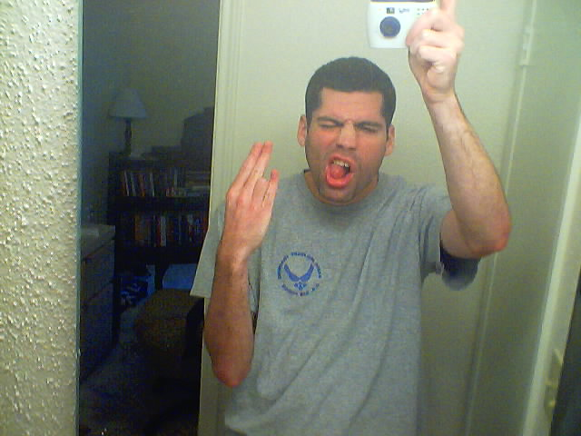

A Little Weird
reality bizarres the standard
| Author | Message |
|---|---|
| Jeffrey |
Well, I've seen this done numerous times on other forums, and thought ALW might need one.
~ Name: Jeffrey Awesome! Age: 15 about to go on 16 Birthday: March 12th Sex: Male Location: New York Favorite Music: I listen to anything that has a good beat, but, best genre for me might be techno/trance. Favorite Color: All of them. Hah. :-) Favorite Book: House of Leaves, Ring Favorite Artist: Jeff Smith, who does the Bone comic ( http://en.wikipedia.org/wiki/Bone_%28comic%29). Hobbies: Well, I like to draw, animate, make music, uhm, video games, hang out with my friends, and of course, practice psionics. Photo:  Reason You Are Here: Well, I am here to personally better myself, and to reach the full potential of the human being. And to learn more and more of the unknown. And it'd be pretty badass to move things with my mind. :-P Psionic Abilities: Well, I can move a psiwheel if you give me a minute... Or 60. Others: I'm a HUGE Sonic the Hedgehog fan. Hahaha. I'm a huge nerd as well. Uhm... My favorite super heroes are Static Shock, Flash, and the Teen Titans. When I get older, I would like to be in some sort of animation field. I found PsiPog, LITTERALLY, 2 weeks after it was shut down. You could imagine how disappointed I was. Last edited by Jeffrey, 4 years, 9 months ago |
| Jeffrey |
Edit FTW!
Last edited by Jeffrey, 4 years, 9 months ago |
| ARandomKid |
Sounds fun. I'll participate...
Name: Alex Age: 16, going on 17.... Birthday: Dec. 27th Sex: Male Location: Here: -> :O Favorite Music: Anything that sounds good. I've got a wide variety on my MP3 player at the moment... Favorite Color: All of them. Hah. :-) (I am inclined to agree. Colors are fun) Favorite Book: Blessed Child, by... Favorite Artist: Hmm...Ben Mackey, even though nobody really knows him. He's an awesome kid from my school. Hobbies: See this topic: http://alittleweird.com/forums.php?cmd=thread&tid=242 Photo: Apparently, I don't have one...could've sworn I did. Huh. Odd. Reason You Are Here: To talk about weird things and gather ideas for my game. But mainly to talk about weird things. Psionic Abilities: I can move a psiwheel...and that's about it. I'm not even very good at that. ;>_> Others: ...hmmm...well, nothing else I can really say, I guess. NOTE: The information contained above may or may not be 45.3% accurate. If you're going to try and stalk me with this...good luck. Also, you're kinda creepy. Just thought I'd throw that out there. -ARK- Last edited by ARandomKid, 4 years, 7 months ago |
| Sean |
Name: Sean
Age: 24 Birthday: 7 May Sex: Male Location: Maryland Favorite Music: AFI, Blaqk Audio, Lost Prophets, Daft Punk, Mindless Self Indulgence, Goose, ... Favorite Color: Usually dark red Favorite Book: Siddhartha by Hermann Hesse Favorite Artist: AVGN, if he counts :-) Hobbies: OBEs, lottery, programming, composing music, guitar, piano Photo:  Reason You Are Here: I made the site... :-P. I enjoy talking about strange topics and such. Psionic Abilities: Just about all of them, to varying degrees. Mostly focused on empathy, OBEs, precognition, remote viewing, and telepathy (i.e., perception based skills). ~Sean Posted 4 years, 10 months ago |
| Etree8 |
Name: Ethan
Posted 4 years, 10 months ago |
| Etree8 |
dammit, we need an edit button :(
Name: Ethan Age: 16, almost 17 Birthday: April 2 Sex: Male Location: Spokane, WA Favorite Music: I really like Sum 41's new album right now Favorite Color: Dark Green Favorite Book: The Otherland Series by Tad Williams Hobbies: FFXI, WoW, other computer related activities, thinking about setting time aside for practicing psionics but never actually doing it >.> Photo: Linked for big Reason you are here: I got lonely after PsiPog got archived Psionic Abilities: Before I stopped practicing (damn, you MMO's!) I could make pretty decent constructs and was working on moving the psiwheel, but only had success a few times. Haven't done much telepathy because I can't find a partner. Posted 4 years, 10 months ago |
| Legend_Underhill |
Name: Scott Legend_Underhill
Age: 16 Birthday: ??? Sex: Male Location: ??? Favorite Music: I like just about all music, but I really like to hear strange artists, that don’t try to fit some specific Genre. Favorite Color: Red, but I like all colors in their own way. Favorite Book: Too many. Favorite Artist: Too many. Hobbies: Drawing, writing, animation, filmmaking, role-playing, video gaming, psionics and basically designing anything from my own games to t-shirts. Reason You Are Here: There are a lot of reasons why I’m here, basically to be with people learning and practicing the same things as me. Psionics is not just a light interest to me. The things I have learned on Sean’s sites has furthered my vision of reality and improved me as a person. I can see the corrupt societal views of today dieing, as people in general improve gradually like they have always done. I am here to be doing my part to build a better tomorrow, too. Psionic Abilities: Very limited energy manipulation, some self-healing, a natural [maybe instinctual] sense of empathy, and most recently OBEs. No picture for right now, sorry :P Posted 4 years, 10 months ago |
| Dantistas |
Name: Karolis a.k.a Dantistas (in my country)
Age: 15, going on 16.... Birthday: April 21. Sex: Male Location: Somewhere in Lithuania Favorite Music: Punk rock, Metal, Ska Punk... Favorite Color: Blue Favorite Book: Richard Bach - Illusions Favorite Artist: N/A Hobbies: Extreme Sport (like snowskating or skateboarding) Photo: Huh, I don't have any... Reason You Are Here: I like to be with alter ego's. Psionic Abilities: Psichokinesis, Remote Presence, OBE, Lucid Dreams. Others:hmm, I am yogi, I am form Lithuanian, and I have my own site about psionics. Note: Sorry for my bad English... Last edited by Dantistas, 4 years, 9 months ago |
| metalforever |
Name: Sarah
Age: 16 Birthday: September 7th Sex: Female Location: Pennsylvania Favorite Music: Mindless Self Indulgence, Suicidal Tendencies(OLD), Nightwish, Therion, Tool, Alien Sex Fiend, Bauhaus, Sepultura(OLD), Deftones, Within Temptation, Children of Bodom, Fantomas, way way more. Favorite Color: Black. I look nice in red. Favorite Book: The Last Book in the Universe. Its a Young Adults book. Favorite Artist: Poe(Doesnt have to be visual artist) Hobbies: OBE, Guitar, Music, Linux(yey), Sewing, Getting Things to do what they werent meant to. (Ex. I made my Ds a TI Calculator a while ago because i needed one), Teaching People Psionics. Pictures:     Reason You Are Here: I like reading peebs ideas. Psionic Abilities: OBE, RV, Psychokinesis Others: I own www.PsionicsOnline.net . I like spending a great deal of my time on Psionics, whether in real life, or on the internet. I like holding Psionic seminars live. I have a group of about 14 or 15 people from like 13-24 whom i practice with. I like volunteering my time for good causes. I like wearing clothing either self made, or made by someone else because i like to be original.... or showing off my musical tastes. Last edited by metalforever, 4 years, 9 months ago |
| bd333 |
Name: Bobby
Age: 16 Birthday: Feb 27 Sex: Male Location: B.C., Canada Favorite Music: I don't know, a bit of everything Favorite color: Dark blue... and green Favorite book: Many Favorite artist: My sister, she does amazing work Hobbies: I am a pretty good photographer and I am really into extreme sports (mostly mountain biking and snowboarding). I spend a lot of my time building mountain bike trails. I also like editing video and working with computers (yay for linux!!) Photo: I'm always the one taking the photos! Why you are here: I like to explore the vast possibilities that the universe has to offer :p. Psionic Abilities: Basic PK stuff, Telepathy, empathy, but I never really get around to practicing telepathy 'cause there is nobody who I know that will do it with me. Precognition Other: I like to use the edit button a lot... My current avatar is a photo of a lunar eclipse that I took a few months ago. I take lots of photos. and I talk a lot. Last edited by bd333, 4 years, 7 months ago |
| Waldo |
Name: Paul
Age: 19 Birthday: May 24th Sex: Male Location: York, England Favorite Music: Bad question. I'd list all my favourite composers, but then this would quickly become boring... so I'll go with "classical" music from about 1830 onwards... plus more or less anything with a violin in. I'm not even kidding. Oh, and Russian composers ftw. Favorite Colour: Green or purple. I am a stunner in black with my auburn hair, though. Anything but yellow is good. =) Favorite Book: Oh, no. Er. No, I pass, there are far too many. Favorite Artist: See above. Hobbies: Music - I'm a violinist/saxophonist/violist/flautist/pianist. Hence my ridiculous music degree in the making. Psionics. Reading random crap. Baking cakes and cookies. Oooh, yum. Learning languages. Speaking foreign languages. Photo: I refuse to post one until I have one of me with my new hair. It's hot. =D Reason You Are Here: I was upset when I came back from a huge break from psionics to find Psipog had been archived, and managed to find my way here from there. I'm glad I did. =) Psionic Abilities: Current ones, or all I've ever done? Current - MacroTK on a small scale, but I am improving constantly! I'm also fairly sure I retained some skill at telepathy. But that was always random and unfocused anyway. =) Back in the day, I was fairly competent at energy manipulation, spurts of telepathy, pathetic progress at TK, and I also dabbled in OBEs. However, I managed to freak myself out so much with that that I stopped. Others: I'm a bit obsessive. I got a 75% score when I took a Machiavellian test thing. I speak French and German in abundance, uncontrollably when I have the drink taken. That's more or less all you need to know about me. =0 =) x Posted 4 years, 8 months ago |
| runical |
Name: Peter
Age 17 birthday: 4th of march 1991 Sex: Male location: The Netherlands Favorite music: All sorts of, don't know for sure wich ones myself :P Favorite color: Red and I absolutely hate pink :P Favorite book: DUNE!!!! and many more hobbies: not many, just fooling around when I use the computer, otherwise reading and playing games on my gameboy and stuff. Photo: NO WAY!!! I lost it! (It deleted itself, probably thought it was too great) Reason You Are Here: Because of a strange intrest in breaking the laws of physics, but the rest is nice too. Psionic abilities: I can make a small psiball (just have to get serious with training) Others: I don't drink alcohol and I don't use drugs :P Last edited by runical, 4 years, 8 months ago |
| M. Dragon Fang |
Name: Mark Staarink
Age: 13 Birthday: 29 july 1994 Sex: Male Location: The Netherlands Favorite Music: Techno, Dance and Trance. Favorite Color: aquamarine blue :3 Favorite Book: I don't read much ^^; Favorite Artist: - Hobbies: Playing around with photoshop, hanging around on the internet (most time forums), watching few anime, and training telekenisis. Photo: none, sorry Reason You Are Here: Learn things and ofcourse get help with psionic stuff. Psionic Abilities: - Only a really tiny bit of telekenisis. Well, I atleast can make the paper move :D Others: I'm a pokemon fan. yes, laugh at me, but the anime sucks, I know. but you need enormous amount of strategy in the game. :# UPDATE: 22-04-2008 edited my psionic abilities. Last edited by M. Dragon Fang, 4 years, 8 months ago |
| somefatguy |
Sorry to break the mold, but I'm just going to talk about myself in minor detail. :)
Well, I'm an old member of Psipog and I'm here to see interesting discussions and see some old friends if I can. So far I can't really see many, unless they all have different usernames. My interests are psionics, enlightenment, spirituality, and video games. Oh, and if anyone wants to fight in Super Smash Brother Brawl that'd be awesome. :D Posted 4 years, 8 months ago |
| keen31 |
My interests are psionics, enlightenment, spirituality, and video games. i dont think i need to even write an intro now, that sums me up pretty well also.p.s. dont have smash yet but may pick it up soon. i hang out on destructoid.com a lot and there are a lot of players there that would be more than willing to beat the crap out of you. Posted 4 years, 8 months ago |
| ARandomKid |
somefatguy. I remember you. Not sure if you remember me or not...
Posted 4 years, 8 months ago |
| somefatguy |
Keen31: Ha ha ha, nice. I think I'm "alright" with Brawl. Lately I've been feeling even better since I've been winning against my friend who is pretty good though.
ARandomKid: Of course I do. :) Nice to see you Posted 4 years, 8 months ago |
| ARandomKid |
It's nice to see someone I actually recognize. ;^_^
Not sure if delimew or Dash were ever on Psipog...but I remember you were there with your motionless meditation goals. :P Posted 4 years, 8 months ago |
| somefatguy |
Ahh yeah, those were the days. I never made it up to 24 hours. Only 2 :P
The one day I tried for 24 hours I told my mom not to bother me and that I'd be meditating for 24 hours and even had a little sign next to me, but she purposely came in trying to make me laugh and I gave up. Posted 4 years, 8 months ago |
| ARandomKid |
Hahah. I can just imagine somebody with a tiny little sign next to them reading "Do Not Disturb"
Posted 4 years, 8 months ago |